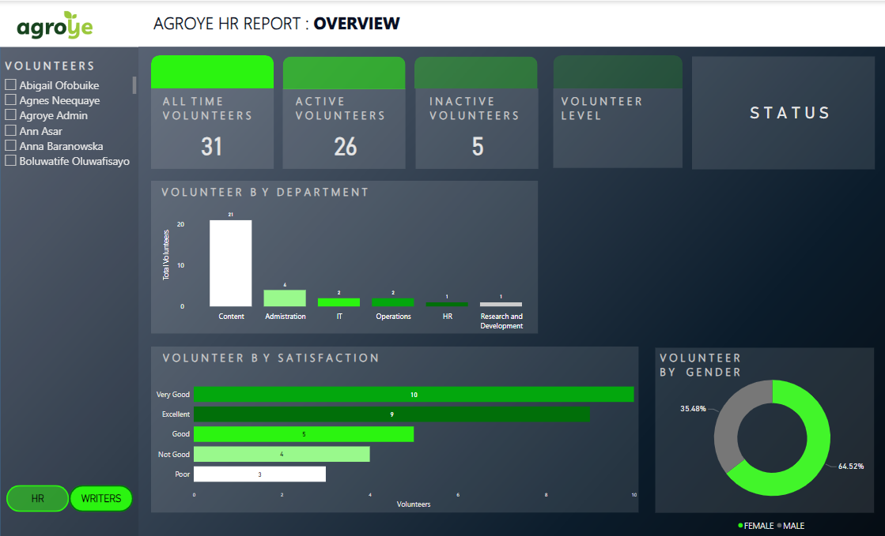
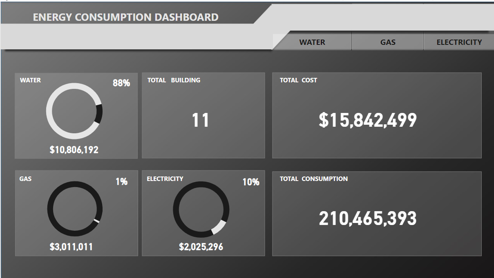
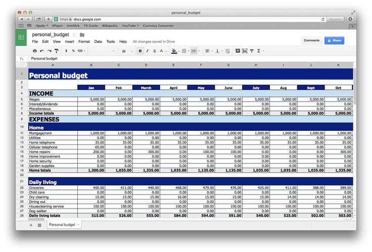

I specialize in efficiently extracting structured data from website using Python, BeautifulSoup and Scrapy.
From e-commerce product details to news article and financial data, my projects demostrated ethical and effective scraping practices.
Let's connect to explore how I can help you leverage web scraping for your projects.

A comprehensive breakdown of volunteer activities,
Providing a high-level summary of volunteer demographics, including total number of volunteers, their departments and engagement levels over time.

Explore how I analyze and visualize data to provide insights into energy usage patterns, identity opprtunties
for efficiency improvement and empower users to make informed decisions for cost-saving and sustainability.

Are you seeking a meticulous individual with a knack for financial organization and Excel expertise to manage your budgeting needs? Look no further!
I specialize in crafting comprehensive Excel spreasheet projects tailored to your unique financial goals amd requirments.

In this data cleaning Project, I utilized SQL techniques to improve the acuracy and reliability of the dataset.
I addressed the issues such as duplicate entries,inconsistent formatting, missing values within the hosuing data.